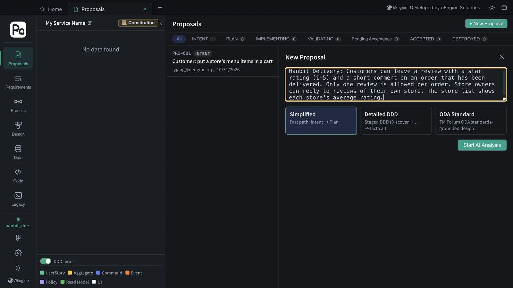
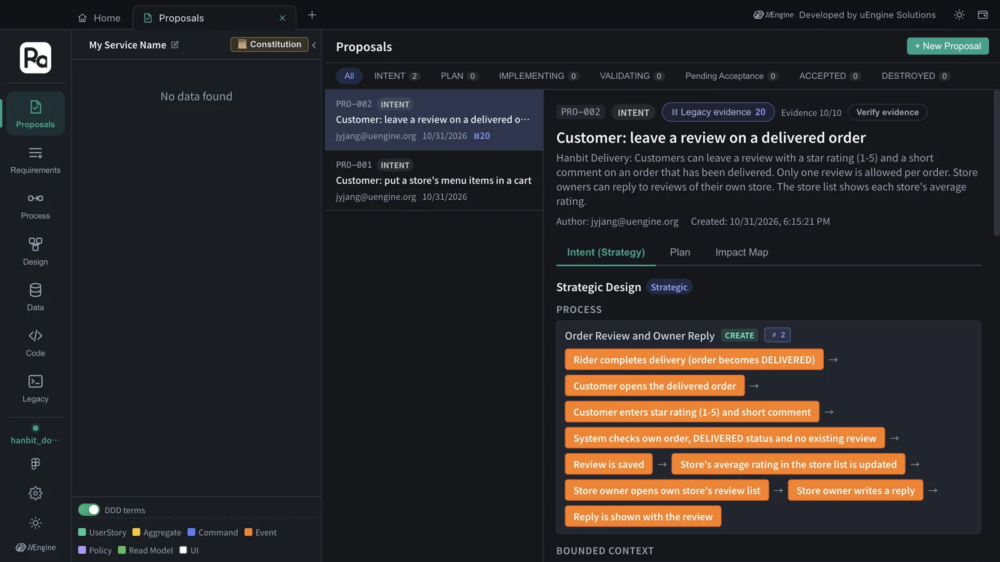
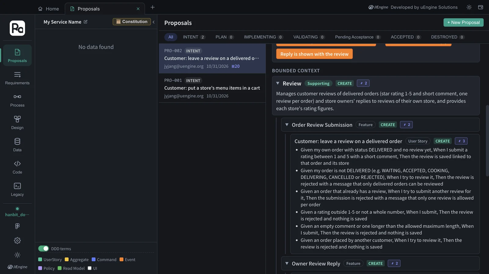

Run the whole flow so far — proposal · constitution · plan · implementation · validation · acceptance · change impact — once more, end to end, on your own. The task is to add “reviews” to Hanbit Delivery. An example run as far as the strategic design is shown alongside.
The task#
Put the following requirement into the Hanbit Delivery project (hanbit_delivery_en) as a proposal, and take it all the way to acceptance.
Hanbit Delivery: Customers can leave a review with a star rating (1-5) and a short comment on an order that has been delivered. Only one review is allowed per order. Store owners can reply to reviews of their own store. The store list shows each store's average rating.
Steps#
- Create the proposal — Proposals tab › + New Proposal, enter the sentence above, and click Start AI Analysis (Chapter 3).
- Check the strategic design — read the bounded contexts · features · user stories · acceptance criteria, and if they're off, use Different intent? Regenerate with feedback (Chapter 3).
- Plan — use the constitution you set in Chapter 4 as it is. Proceed to Plan → → Generate Plan → Confirm Plan (Chapter 5). If a Constitution Gap comes up, note it down.
- Implement — Open Sandbox Implementation → Generate task list → Start implementation → Go to Claude Code cell (Chapter 6).
- Validate and accept — Done → Verify, check that the acceptance criteria pass, then Accept (Dual Merge) (Chapter 7).
- Check the impact — see in the Requirements · Design · Data tabs what was newly created and what changed (Chapters 8 · 9).
Example — a run through the strategic design#
We put the same sentence into the practice project hanbit_doc_en (Chapter 12) and ran it through INTENT. It took 180 seconds (3 minutes), and it was split right away with no clarification questions. Because the project already holds PRO-001 from Chapter 12, this one became PRO-002.

| Bounded context | Classification | Features | User stories |
|---|---|---|---|
| Review | Supporting | Order Review Submission · Owner Review Reply | Customer: leave a review on a delivered order · Store owner: view reviews of my store · Store owner: reply to a review of my store |
| Store | Supporting | Store List Average Rating | Customer: see each store's average rating in the store list |
There was one process, “Order Review and Owner Reply”, which runs from delivery completion through writing the review and updating the store's average rating to the store owner's reply.

The header also shows Legacy evidence 20. The analysis graph is one for the whole app, so the old order system you analyzed in Chapter 13 was searched here too, and its code and tables were attached as evidence — for example, the old DeliveryService.complete, which sets an order to DELIVERED, is cited as the point where an order becomes reviewable.
Every rule in the task sentence came down as acceptance criteria. These are the ones attached to “Customer: leave a review on a delivered order”.
| Rule in the sentence | Acceptance criteria (Given · When · Then) |
|---|---|
| On a delivered order | My order is not DELIVERED (e.g. WAITING, ACCEPTED, COOKING, DELIVERING, CANCELLED or REJECTED) · try to review it · rejected with a message that only delivered orders can be reviewed |
| One per order | An order that already has a review · submit another review for it · rejected with a message that only one review is allowed per order |
| Rating 1–5 | A rating outside 1–5 or not a whole number · submit · rejected and nothing is saved |
| A short comment | An empty comment or one longer than the allowed maximum length · submit · rejected and nothing is saved |
| (Not in the sentence) | An order placed by another customer · try to review it · rejected and nothing is saved |
The order statuses in the first row (WAITING · COOKING · DELIVERING …) are not in the task sentence. They are exactly the old orders.status values, which came in with the legacy evidence.

Your result will differ from this
The example ran in a practice project with no accepted design, so it also created a new “Store” context (CREATE). The INTENT skill has the rule “if an existing domain element matches, reuse its id”, so in hanbit_delivery_en, where you finished Chapters 3–7, the new features go under existing contexts such as “Ordering” · “Menu Management”, and the plan has items that modify existing aggregates (MODIFY) (in Chapter 9, Order came out as MODIFY with HIGH conflict risk). Looking at that difference together with the impact from Chapter 9 is the point of this task.
Check yourself#
| Check | Where to look |
|---|---|
| You can explain your reasoning for making reviews a separate bounded context, or putting them inside ordering | Strategic design · constitution principle I (module boundaries) |
| “Only on delivered orders” and “one per order” went into the acceptance criteria and the aggregate rules (invariants) | Strategic design · the plan's Tactical Design |
| You can explain where the average rating is calculated (a read model), without reading another module's tables directly | The plan's architecture decisions · constitution principle I |
| The review story's acceptance criteria passed in validation | Validation section |
| You checked in the impact view what changed in the existing order · store design | Impact Map · Chapter 9 |
More to try#
- Fix a team rule in a skill — add a rule such as “set the review comment length as a number” to
robo-proposal-intentand compare the results (Chapter 10). - Match the old DB — the old DB's
orders.statusfrom Chapter 11 hasDELIVERED. Write down in the constitution or the next proposal which old value “delivered” maps to. - Start from a document — write requirements such as reviews · coupons · regulars as one document and paste it in as in Chapter 12.